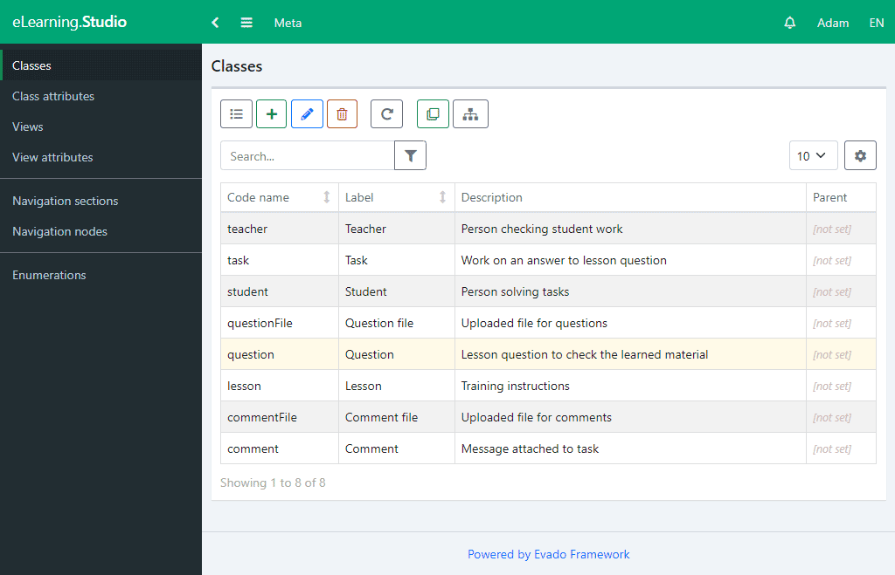

Main entities
The application entities can be divided into three interrelated parts: system participants, training materials and tasks. The participants are teachers and students. The training materials are lessons and questions on them that test the knowledge gained. The tasks are answers that students offer to questions, and a discussion of these answers.
Go to Studio module and create main app classes. First of all, create classes that describe the participants. Create a Teacher class. Add an User attribute with the System User type. This attribute will store the teacher's connection with the user who is logged in to the application. Create a Student class and also add an User attribute.
Next, create a Lesson class that contains the lesson information and its name. To do this, add a string attribute Name and a text attribute Content.
Each lesson should contain questions to test the learning. To do this, create a Question class. Add a text attribute Text, which will store the content of the question. To link a question to a lesson, create a reference attribute Lesson.
Create a Task class that describes the student's answer to the question, discussion and evaluation of this answer. Add a Student reference attribute, which will link the task to a specific student. Add a Question reference attribute to link a task to a question. Add a text attribute for the response content. And finally, add an integer attribute Grade for a teacher to evaluate an answer. Go to the Enumeration tab and create text labels for grades.
When performing a task, before or after its assessment, questions will inevitably arise, both students and teachers. Make it possible to comment on a task.
Create a Comment class. Add a Task reference attribute to link to a task and a text attribute for the content of the comment. In addition, you need to display some service data. To do this, add a Creator (_creator) attributes, which will display the user who created the object, and a Creation Date (_createdAt) with the Date type and the Local Date view. Attributes describing service data should be read-only.
The local date representation takes into account the client's time zone. Thus, the representation of the same date will be different for clients from different time zones.
Next, you need to create calculated link attributes. An attribute with the Back Reference type does not store the link value, but extracts it from the specified relationship.
Go back to the Task class and create the Comments attribute as a back reference to the Comment class. This multiple link allows you to find all comments that link to a task. Go to the Question class and create a Task back reference to get all tasks related to a question. Go to the Lesson class and create a Questions back reference to get all questions referring to a lesson.